Usos de la Consola en JavaScrip
La consola se trata de uno de los diversos objetos que podemos encontrar tanto en el navegador como en los interpretes de javaScript el cual tiene como objetivo brindar todo tipo de información util para el desarrollador sobre el estado de la paguina, desde todo tipo de errores hasta revelar los diferentes datos que se esten manipulando.
La consola de JavaScrip se puede encontrar ya en el interprete de JavaScrip, en algunos IDE que lo tengan incluido y principalmente esta disponible en los navegadores, en los cuales se puede acceder a este presionando el boton derecho del raton, y seleccionando la opción llamada "inspeccionar elemento".
De este modo se despliega una nueva pestaña que contiene todas las herramientas de desarrollador, donde en la parte superior se encuentran dibersas pestañas, en la cuales la primera de estas permite visualizar los elementos HTML, la pestaña de interes en este apartado es la segunda pestaña, llamada "console", la cual permte ejecutar instrucciones que seran procesadas por el navegador.
Nota: En Google Chrome se habre automaticamete indiendo el boton "F12".
Nota: Si en las herramientas de desarrollador se selecciona un elemento HTML y en la consola se escribe los caracteres "$0" se mostraran todas las caracteriticas del elemento en cuestión.
Funciones del Objeto console
Console.log( )
-
Este metodo permite imprimir elementos directamente en la consola, los cuales se deben definir en el interior de los parentesis de su sintaxis.
Ejemplo
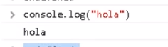
En este ejemplo se empleo la función console.log directamente en la consola del navegador, resultado en que inmediantamete despues imprimiera el valor definido en esta.
Funciones de Registro de la Consola
Assert( )
-
esta función detona un mensaje de error en la consola si una afirmacón seleccionada es falsa, por otro ldo si la afirmación es verdadera no aparecera nada.
Esta función no pertenece al estandar, tampoco se recomienda su uso, sin embargo es util conocerla ya que se puede dar el caso de que se pueda encontrar en el codigo de algun tercero.
Ejemplo
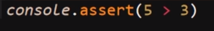
Resultado
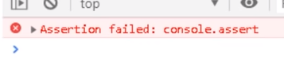
Clear( )
-
Esta función permite limpiar la consola, esto es util ya que conforme se va usando la consola se satura de datos o comandos e incluso errores que ya han sido manipulados, por ello para poder trabajar con nueva información de forma organizado es necesario limpiar la consola de todos estos datos antiguos.
Ejemplo
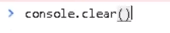
Error( )
-
Esta función permite personalizar un mensaje que se mostrara en consola cuando se dispare un error, en una area establecida del codigo, es decir esta función permite que se personalise un mensaje de error para algun bloque de codigo en partiuclar.
Ejemplo
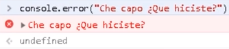
Nota: esta función puede ser usada tanto dentro del codigo javaScript como desde la misma consola.
Info( )
-
Esta función se asemeja mucho a ".log()" con la unica diferencia de que esta se deberia emplear unicamete para imprimir mensajes exclusivamete informativos, realmete esta función se puede emplear de la misma forma que ".log()", ya que la unica diferencia en la funcinalidad de ambos es que "info()" se puede mostrar con otros colores en algunos navegadores.
Ejemplo
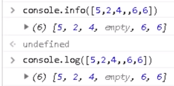
En este ejemplo se puede apreciar que basicamete no existe diferencia entre "console.log" y "console.info", sin embargo ya que "log()" conceptualmente no se limita a solo datos informativos es más usado.
Table( )
-
Esta función toma un argumeto obligatorio: data, que debe ser un array o un parametro adicional, más un parametro adicional: columns y con esto muestra una tabla en la consola.
Ejemplo
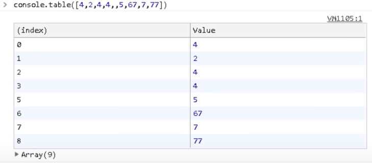
En este ejemplo se puede apreciar una tabla generada en la consola apartir de un arra, en esta tabla no se empleo el parametro adicional (columns), en dicha tabla la columna izquierda revela la posición del elemento mientras que la derecha revela el valor de los datos.
Nota: Si se ingresa un elemetos que no sea un objeto o un array esta función se va a comportar como un ".log()".
Warn( )
-
Esta función se asemeja mucho a la función "error()", con la diferencia de que esta no detona un error, si no que en su lugar detona un ensaje de advertencia.
Ejemplo
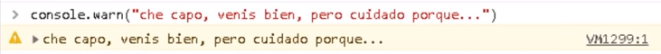
Nota: no se recomienda el uso de esta función ya que esta en des-uso, sin embargo aún es importante conoseerla ya que es muy probable que se encuentre en codigos de terceros.
Dir( )
-
Esta función despliega una lista interactiva de las Propiedades del objeto javaScript espesificado, se asemeja mucho a "info()" pero la forma en la que se plasman los datos es diferente, a la vez que esta función incluye funcionalidades extra.
Ejemplo
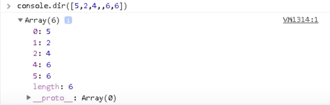
En este ejemplo se muestra el como la propiedad "dir()" muestra los datos de un array.
Funciones de Conteo
- Count( ) y CountReset( )
-
Esta función realiza un conteo de las veces que esta a sido empleada, es decir la función "count()" muestra en consola las veces que ha sido usada, esto es util a un nivel de funcionalidad para saver el numero de vecess que ha sido ejecutado un elemento, como por ejemplo una función.
Esta función se usa en conjunto con "countReset()", la cual es una función que permite reiniciar el valor de "count()" a "0", permitiendo empezar con el conteo nuevamente.
Ejemplo
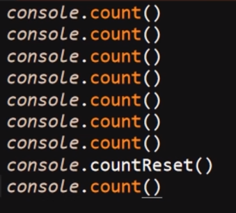
Resultado
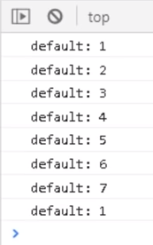
En este ejemplo se muestra el como la función cuenta cada uno de sus usos, y el como el valor de esta es reiniciado por la propiedad "countReset()".
Funciones de agrupación
Group( ) y GroupEnd( )
-
Esta función permite generar un "grupo" en la consola, es decir permite generar un bloque de comandos retractil, se hacemeja a generar un contenedor para los comandos, esta fución se puede anidar generando varios niveles de grupos no dentro de otro.
Esta función recibe el nombre del grupo ingresandolo dentro de los parentesis, de no ingresarse ningun nombre genera un grupo sin nombre, al que se le aplicara el nombre de la función "group()" por defecto.
Ejemplo
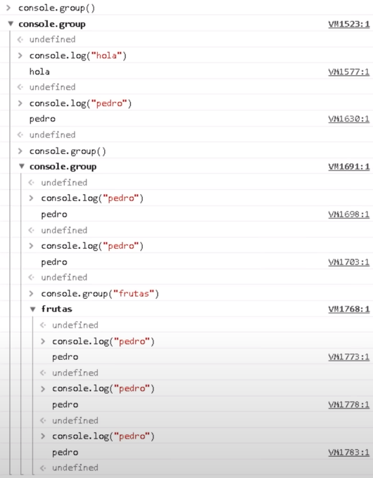
En este ejemplo se puede apreciar el uso de la función "group" ejemplo en el cual se crearon tres niveles de grupos, en los cuales dos no poseen nombre, mientras que el tercer grupo posee el nombre de "fresas."
Por otro lado la función "groupEnd" permite cerrar los grupos, funciona como la etiqueta de cierre de un elemento HTML, al incluirlo al final de un grupo este culminara allí, por lo tanto todo lo que se escriba de allí en adelante pasa a pertenecer al siguiente grupo con mayor nivel, y así hasta cerrar todos los grupos generados, es decir una vez se ingresa esta función al final de un grupo esta lo cerrara impidiendo que se ingresen más datos en el grupo.
Ejemplo/h4>
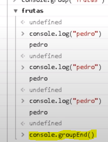
GroupCollapsed( )
-
Esta función es basicamete igual a "group()", con la unicadiferencia de que esta, al generar el grupo lo generara plegado por defecto, a diferencia de "group()" el cual genera el grupo desplegado.
Ejemplo
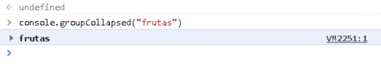
En este ejemplo se aprecia un grupo qeu acaba de ser generado por "groupCollapsed" con el nombre "frutas" y como se puede ver el grupo se encuetra plegado por defecto.
Funciones de Temporizador
Time( ), TimeEnd( ) y TimeLog( )
-
Estas tres funciones permiten controlar el funcionamiento de un temporizador, cada una con su uso en espesifico, las tres en conjunto permiten medir el tiempo que tardan en ejecutarse algun codigo o funcinalidad o incluso medir el tiempo que le toma a algun usuario realizar determinada acción, las funciones y sus usos son:
-
Time( )
Esta función permite inicializar el temporizador, el cual estara corriendo desde el momento en que se ejecute la funcinalidad.
-
TimeLog( )
Esta función permite marcar el temporizador en cierto momento, para de ese modo medir el tiempo que tomo realizar dicha acción, el uso de esta función no detiene el conteo del temporizador por lo que se puede usar las veces que sean necesario, siempre retornando el tiempo transcurrido desde el inicio del temporizador.
Esta función solo puede ser utilizada si el temporizador ya ha sido inicializado por "time()", por lo tanto si el tiempo no ha sido inicializado o ha sido culminado por un "timeEnd()" esta función desencadena un error.
-
TimeEnd( )
Esta función permite culminar el temporizador, al emplearla el tiempo dejara de transcurrir, de ese modo terminando con la actividad, al ejecutarse este comando uestra el tiempo trasncurrido en total desde la inicialización del temporizador.
Ejemplo
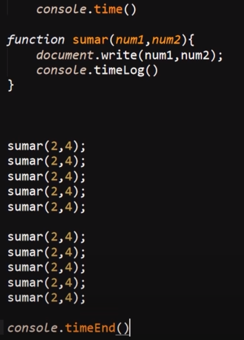
Resultado
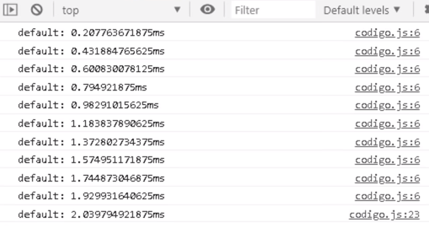
En este ejemplo se puede apreciar el como se incorporo un temporizador en una función que imprime datos en pantalla, en el resultado se puede apreciar como con cada ejecución la función "timelog()" marca en la consola el tiempo transcurrida al momento de realizada la función, y como al final la ejecución del temporizador es terminada por la función "timeEnd()".
Cambiar el Texto de la Consola
Es posible aplicar estilos CSS basicos a los textos que se muestran en consola, esto se puede utilizar para resaltar elementos, estructurar varios tipos de resultados, retornos errores, funciones etc.
La forma de aplicar los estilos a un texto es al definir las funciones de visualización en consola ( log(), info() ) se les añade los caracteres porcentaje (%) seguido de "c" justo antes del texto al que se le aplicara el estilo, separado con una coma (,) se añade como si fuese un dato string (entre parentesis) los estilos CSS, del mismo modo que se aplican estilos en linea en HTML, de este modo se aplicaran estilos CSS basicos al texto mostrado en la consola.
Ejemplo
Resultado
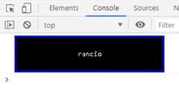
En este ejmeplo se puede apreciar el como al invluir los caracteres "%c" justo antes del texto, se puede añadir los estilos CSS como una segunda cadena de textoluego de la original, resultado en que los estilos definidos se interpretaran y aplicaran al texto pautado.